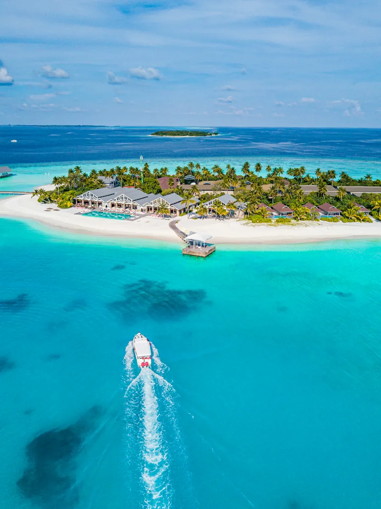

- Главная
- Впечатления
Выйдите в море — или просто замедлитесь
Впечатления
Выбирайте отдельные впечатления или попросите добавить их в ваш тур на Тодду. Нажмите на любую иконку, чтобы узнать подробности.
Встречи с морскими обитателями зависят от природных условий и не гарантируются. · Есть другая идея? Расскажите, о чём мечтаете, и мы сделаем это частью вашего отдыха на Тодду.
Истории гостей
Воспоминания на пять звёзд
5.0средняя оценка гостейВыбрали Тодду ради черепах, а влюбились в людей. Дхаин и Юлия организовали всё — ужин на пляже в последний вечер был настоящей магией, а видео с дрона на пальмовой аллее теперь наше любимое воспоминание.

Анна ВолковаМосква, Россия · Signature Maldives
Поездка к мантам и акулам-няням — главное событие моего года. Всё чётко по времени, гиды внимательные и доброжелательные, цена честная — ровно то, что обещали.

Дмитрий СоколовСанкт-Петербург, Россия · Ocean Explorer
Впервые на Мальдивах — и с первого дня как дома. Идеально чистый гестхаус, тихий бикини-пляж и свежая папайя каждое утро. На все сообщения отвечали за считанные минуты.

Екатерина МорозоваКазань, Россия · Essential Escape
Ездили всей семьёй с двумя подростками. Дети до сих пор вспоминают дельфинов и гидроцикл. Отличное соотношение цены и качества, безопасный снорклинг с гидом и настоящая местная атмосфера.

Сергей ИвановЕкатеринбург, Россия · Ocean Explorer
Тодду — зелёная сторона Мальдив: фермы, пальмы и самая прозрачная вода, которую я видела. Уже на первом снорклинге встретили трёх черепах. Чудесные хозяева!

Магдалена КовальскаяКраков, Польша · Ocean Explorer
Просто, спокойно и прекрасно организовано. В Essential Escape — одна яркая экскурсия и много времени для велосипеда и моря. Забронировал бы то же самое снова.

Пётр НовакВаршава, Польша · Essential Escape
Ужин на пляже и день на курорте идеально дополнили жизнь на локальном острове. Всё было по-личному — совсем не похоже на «пакетный» тур. Спасибо за незабываемый медовый месяц!

Эмили КартерМанчестер, Великобритания · Signature Maldives
Идеальная неделя. Закатная рыбалка, а потом пойманная нами рыба на гриле прямо на пляже — незабываемо. Тёплые, внимательные люди, которым важна каждая деталь.

Камиль ЛоранЛион, Франция · Signature Maldives
Я заядлый снорклер, а риф здесь прямо у пляжа. Полудневная поездка на песчаную отмель — потрясающая, домой привёз отличные фото и видео.

Жюльен МороБордо, Франция · Ocean Explorer
Доступно, по-настоящему и очень красиво. Экскурсия по острову показала нам настоящий Тодду — фермы, деревню, людей. Мы обязательно вернёмся!

Лусия ФернандесВаленсия, Испания · Essential Escape

Ваш остров ждёт
Приезжайте с любопытством — уезжайте с частичкой островной жизни.
Напишите нам даты и какой отдых вы представляете — мы ответим честным персональным предложением.